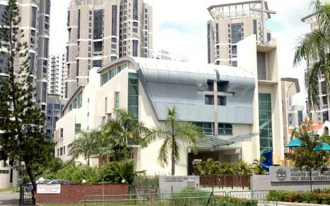

Tanjong Katong Primary School 대구서변초등학교

- 2007~2008
- 10 Seraya Road, Singapore 437259, Tanjong Katong
첫 초등학교. 국제 학교가 아닌 로컬 스쿨에 들어갔는데 생각보다 나같은 친구들이 많은지 정말 다양한 국적의 친구들을 많이 사겼다. 1학년 중 유일한 한국인이었지만 활발한 내 성격에 반한 담임 선생님이 날 반장에 임명하셨다. 뿌듯했다.
- 2008
- 대구광역시 북구 서변동 호국로43길 35
귀국을 하자마자 잠시 정착기간을 위해 외삼촌네 집에서 살았는데 그 동안 삼촌이 선생님으로 계신 서변초등학교에 한 달 간 다녔다. 아직 한국말이 많이 서툴러 받아쓰기 10점 받은 기억밖에 나지 않는다.
용인동백초등학교 서울잠신초등학교
- 2009~2010
- 경기도 용인시 기흥구 동백동 동백평촌로 69
그리고 2년간 용인에서 살았는데 그 때 다닌 동백초등학교이다. 각각 2학년4반, 3학년6반이었다. 2학년 담임 선생님께서 너무 무서워서 아직까지도 기억에 많이 남는다. 3학년 선생님은 너무 천사같으셨다...
- 2010~2013
- 서울특별시 송파구 잠실동 잠실로 32
다녔던 초등학교 중 가장 오래 다녔던 잠신초등학교이다. 신기하게도 잠신초, 잠신중, 잠신고, 송파교육청이 전부 우리 아파트 단지 안에 있어서 30분까지 등교면 25분에 출발했었던 기억이 있다.